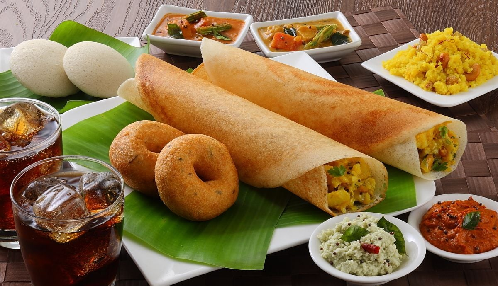
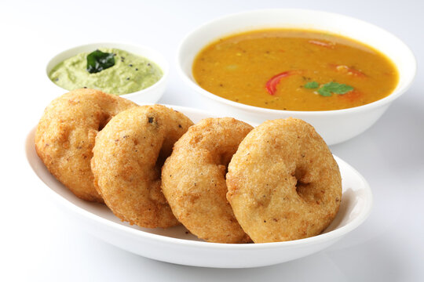

Idli
Idli is a steamed rice-cake prepared with fermented batter or rice and black gram.

Dosa
Dosai is prepared from a fermented batter with sambar or chutney.

Vadai
Vadai is based on the ingredients used and served along with idlis and pongal and sambar,chutney.